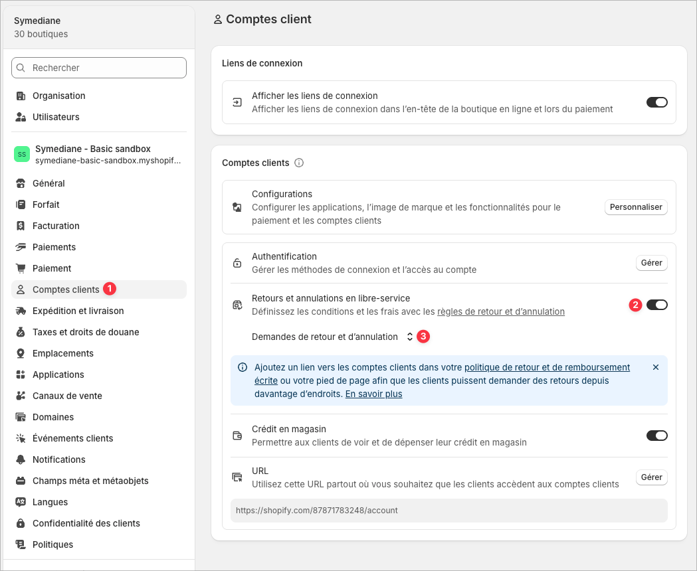
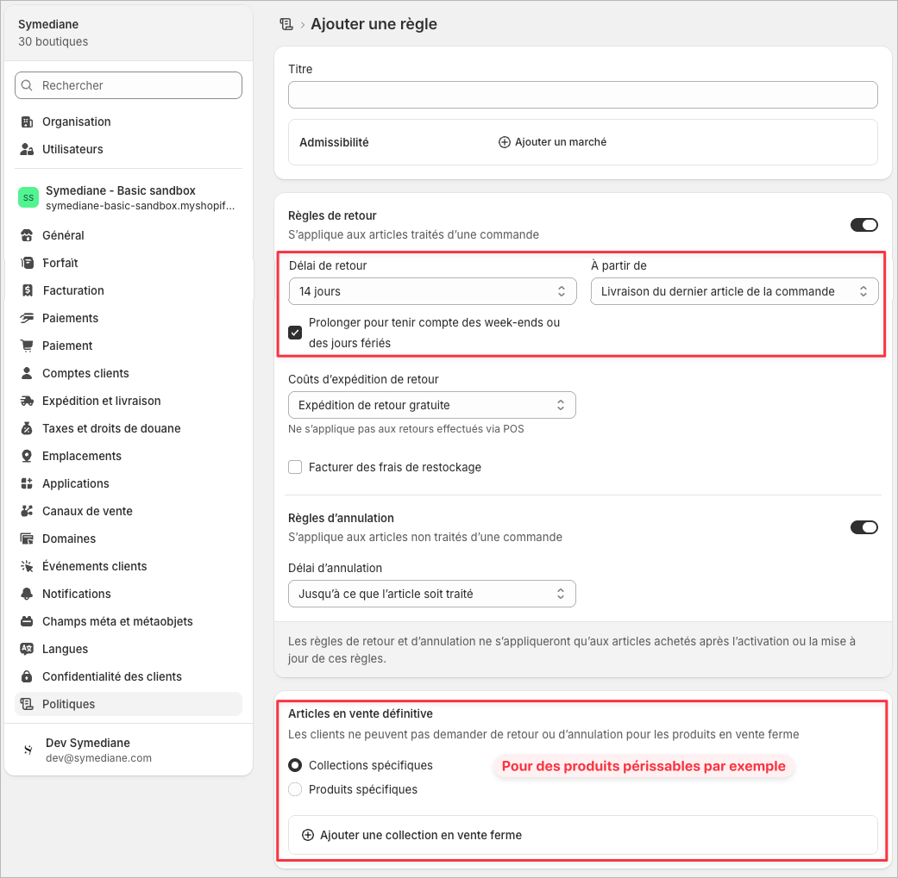
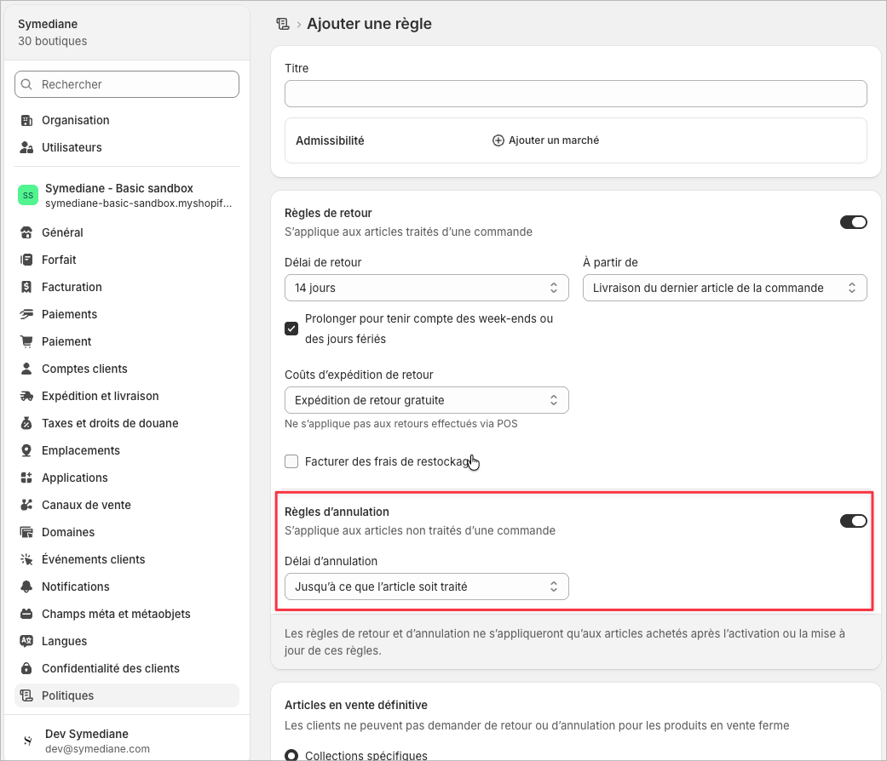
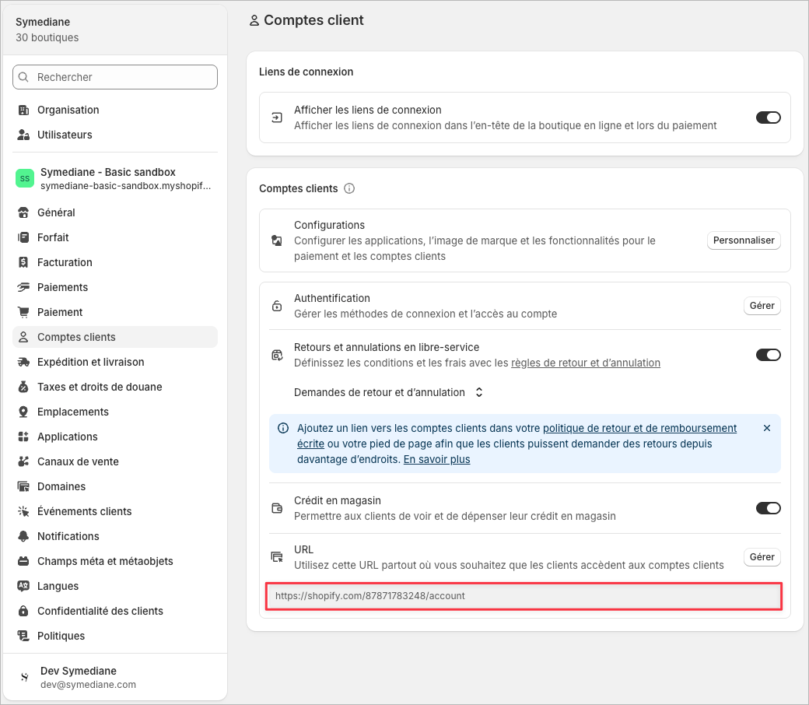
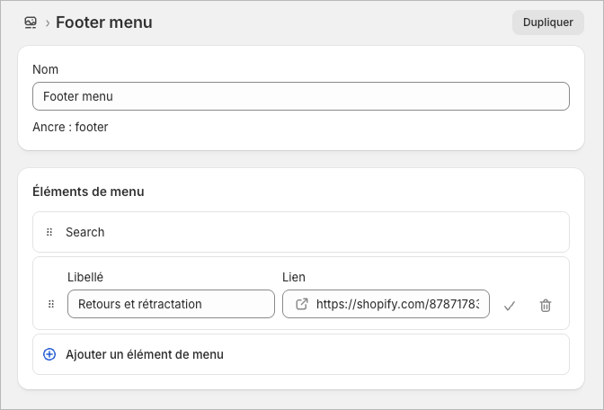
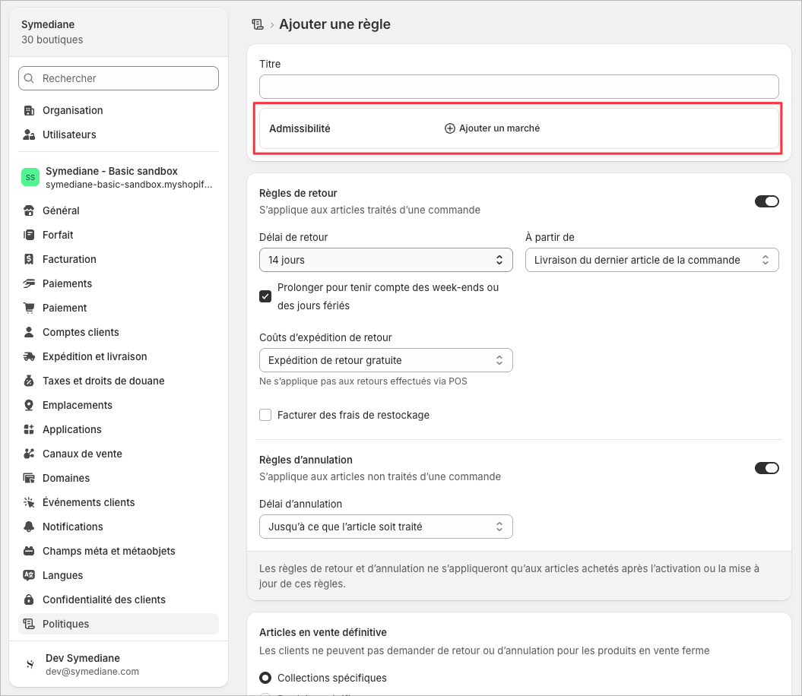
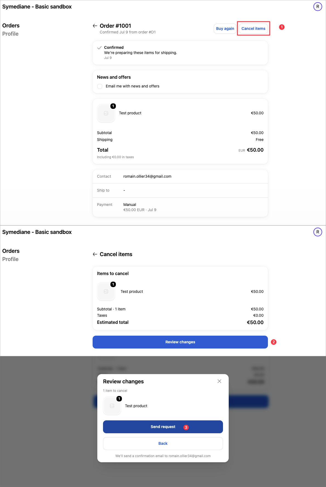

Droit de rétractation UE : mise en conformité de votre boutique Shopify
Guide pratique pour respecter la directive européenne 2023/2673 (« bouton de rétractation ») avec les outils intégrés de Shopify.
Avertissement. Ce document est un guide technique et informatif, pas un conseil juridique. La conformité finale dépend de votre activité, de vos produits et de vos marchés. En cas de doute, consultez un conseiller juridique.
En bref
Depuis le 19 juin 2026, toute boutique en ligne qui vend à des consommateurs de l'Union européenne doit proposer une fonction de rétractation électronique : un bouton ou lien clairement visible permettant au client d'annuler sa commande ou de la retourner directement depuis la boutique, sans avoir à contacter le support.
Shopify ne fournit pas un « bouton magique » unique, mais une combinaison de fonctionnalités natives qui, correctement configurées ensemble, répondent aux exigences :
- les retours et annulations en libre-service (le client agit seul depuis son compte) ;
- les règles de retour et d'annulation (délai de 14 jours minimum, annulation avant expédition) ;
- un lien visible dans la boutique vers l'espace client ;
- les e-mails de confirmation automatiques envoyés à chaque demande.
Ce que dit la loi
La directive (UE) 2023/2673 modifie la directive 2011/83/UE relative aux droits des consommateurs. Elle complète le droit de rétractation existant (14 jours pour annuler un achat à distance sans motif) par une nouvelle obligation technique, applicable aux contrats conclus via une interface en ligne.
| Exigence légale | Concrètement |
|---|---|
| Fonction de rétractation visible | Un bouton ou lien clairement libellé (par exemple « Se rétracter du contrat »), facile à trouver, accessible en continu pendant tout le délai de rétractation. |
| Processus en deux étapes | 1) Le client active la fonction de rétractation. 2) Il confirme sa demande en fournissant son nom et les détails de la commande concernée. |
| Accusé de réception automatique | La boutique envoie immédiatement une confirmation de la demande sur un support durable (e-mail), avec date et heure. |
| Délai de 14 jours | Le délai court à partir de la livraison du dernier article de la commande. Le client doit aussi pouvoir annuler à tout moment avant la livraison. |
| Remboursement sous 14 jours | Après la demande de rétractation, le remboursement doit intervenir dans un délai de 14 jours. |
Qui est concerné
La directive s'applique à toute entreprise vendant en ligne des biens, services ou contenus numériques à des consommateurs de l'UE, quel que soit le pays où l'entreprise est établie. Une boutique suisse, britannique ou américaine qui livre en France ou en Allemagne, affiche des prix en euros ou traduit son site pour un marché européen est concernée.
Certains produits sont exonérés du droit de rétractation de 14 jours (produits périssables, personnalisés, contenus numériques déjà consommés, produits d'hygiène descellés, etc.). Ces exonérations existaient déjà avant 2026 et restent valables. Dans Shopify, elles se gèrent via les « articles en vente finale » (voir étape 2).
Sanctions en cas de non-conformité
- Avertissements juridiques et mises en demeure (les concurrents et associations de consommateurs peuvent agir, notamment en Allemagne).
- Amendes pouvant atteindre 4 % du chiffre d'affaires annuel dans certains États membres.
- Extension automatique du délai de rétractation jusqu'à 12 mois et 14 jours si la fonction n'est pas proposée.
Mise en place dans Shopify
Les étapes ci-dessous utilisent uniquement des fonctionnalités natives de Shopify, sans application tierce. Prérequis : la boutique doit utiliser la nouvelle version des comptes clients (connexion par code e-mail), car le libre-service ne fonctionne pas avec les comptes clients classiques.
Activer les retours et annulations en libre-service
- Dans l'interface administrateur Shopify, allez dans Paramètres > Comptes clients.
- Dans la section Comptes clients, activez les retours en libre-service et sélectionnez l'option couvrant les demandes de retour et d'annulation.
C'est cette fonctionnalité qui constitue la « fonction de rétractation électronique » : le client se connecte à son compte et soumet lui-même sa demande, avec confirmation en deux étapes et e-mail automatique.

Configurer les règles de retour
- Allez dans Paramètres > Politiques.
- Dans la section Règles de retour et d'annulation, ouvrez la règle à modifier.
- Délai de retour : sélectionnez 14 jours minimum.
- Point de départ (« À partir de ») : sélectionnez Livraison du dernier article de la commande.
- Cochez l'option d'extension pour les week-ends et jours fériés (si le dernier jour du délai tombe un week-end ou un jour férié, il est reporté au jour ouvrable suivant).
- Facultatif : déclarez vos produits exonérés (périssables, personnalisés...) comme articles en vente finale.
- Cliquez sur Enregistrer, puis Activer.

Configurer les règles d'annulation
Le client doit pouvoir se rétracter aussi avant la livraison. Les règles d'annulation couvrent les articles non encore expédiés.
- Dans la même section Paramètres > Politiques > Règles de retour et d'annulation, activez les demandes d'annulation.
- Fenêtre d'annulation : sélectionnez Jusqu'au traitement de l'article (« Until item is fulfilled »), pour que le client puisse annuler à tout moment avant l'expédition.
- Cliquez sur Enregistrer.

Ajouter un lien de rétractation visible dans la boutique
La loi exige que la fonction soit facile à trouver. Ajoutez un lien clairement libellé vers l'espace client, au minimum dans le pied de page.
- Copiez l'URL des comptes clients depuis Paramètres > Comptes clients.
- Allez dans Contenu > Menus, ouvrez le Menu du pied de page.
- Ajoutez un élément de menu avec un libellé explicite, par exemple « Se rétracter / annuler ma commande » ou « Retours et rétractation », pointant vers l'URL des comptes clients.
- Ajoutez aussi ce lien dans votre politique de remboursement (Paramètres > Politiques) et, idéalement, sur une page dédiée « Retours ».
Si vous vendez sur plusieurs marchés, vous pouvez définir un menu différent par marché et n'afficher ce point d'entrée que pour les vitrines destinées à l'UE.


Règles différentes par marché Facultatif
Si vous ne voulez pas appliquer les conditions UE au monde entier (par exemple garder un délai de retour plus court hors UE), créez une règle spécifique au marché Union européenne.
- Dans Paramètres > Politiques > Règles de retour et d'annulation, cliquez sur Ajouter des règles.
- Dans le champ Admissibilité, sélectionnez vos marchés UE.
- Appliquez-y les réglages des étapes 2 et 3 (14 jours, dernier article, annulation jusqu'au traitement).
Cette fonctionnalité de règles par marché est en accès anticipé chez Shopify et peut ne pas être disponible sur toutes les boutiques. À défaut, appliquez les réglages UE comme règle par défaut.

Mettre à jour la politique écrite de retour et remboursement
- Dans Paramètres > Politiques > Politiques écrites, ouvrez la Politique de retour et de remboursement.
- Mentionnez explicitement : le droit de rétractation de 14 jours, son point de départ (livraison du dernier article), la possibilité d'annuler avant expédition, la marche à suivre (lien vers l'espace client) et le délai de remboursement de 14 jours.
Cette politique s'affiche automatiquement dans le pied de page des pages de paiement. Le modèle généré par Shopify n'existe qu'en anglais : pour une boutique en français, rédigez votre propre texte.
Traiter les demandes dans les délais
La configuration ne suffit pas, le processus opérationnel compte aussi :
- Chaque demande de retour ou d'annulation déclenche une notification dans l'admin : traitez-les rapidement.
- Pour les commandes UE, le remboursement doit être émis sous 14 jours après la demande de rétractation.
- Vérifiez les modèles d'e-mails dans Paramètres > Notifications > Retours (confirmation de demande, approbation, refus) : la confirmation automatique de la demande fait office d'accusé de réception exigé par la directive.
Si la boutique utilise une app de retours ou Global-e
Beaucoup de boutiques gèrent déjà leurs retours avec un service externe. Dans ce cas, la fonction de rétractation peut passer par ce service plutôt que par le libre-service natif de Shopify, mais certains points restent à vérifier.
Apps de retours (Baback, Loop Returns, etc.)
Les principaux éditeurs ont adapté leur produit à la directive : le portail de retours de l'app peut faire office de fonction de rétractation électronique (Baback, par exemple, annonce une conformité intégrée à son portail de retours existant). Points à vérifier avec chaque app :
- Les annulations avant expédition : la plupart des apps de retours ne gèrent que les articles livrés. Si c'est le cas, gardez les règles d'annulation natives de Shopify (étapes 1 et 3) actives en complément, pour couvrir la rétractation avant livraison.
- Le bloc d'app dans le compte client : ces apps proposent généralement une extension de compte client (app block) à placer sur la page de détail de commande. Ajoutez-le via l'éditeur de personnalisation des comptes clients, pour que le client trouve le point d'entrée là où la directive l'attend.
- Le lien visible dans la boutique : le pied de page doit pointer vers le portail de retours de l'app (ou vers le compte client qui contient le bloc), avec un libellé clair de type « Retours et rétractation ».
- L'accusé de réception : vérifiez que l'app envoie automatiquement un e-mail horodaté confirmant la demande de rétractation.
- Le paramétrage du délai : 14 jours minimum pour les clients UE, à partir de la livraison, sans possibilité de refus discrétionnaire d'une demande UE valable.
Global-e (ventes internationales)
Global-e agit en tant que marchand officiel (merchant of record) sur les commandes qu'il traite : c'est donc lui qui est juridiquement le « professionnel » soumis à la directive pour ces commandes, et il affiche ses propres liens de rétractation (checkout, e-mails transactionnels, centre d'aide). Côté configuration :
- Global-e fournit une règle « EU Right of Withdrawal » préconstruite dans sa plateforme de retours, inactive par défaut : il faut l'activer.
- Cette règle applique le périmètre UE, la fenêtre de 14 jours et le remboursement des frais de livraison aller d'origine ; les clients hors UE conservent la politique de retour habituelle.
- La boutique Shopify doit malgré tout garder un point d'entrée visible vers le processus de retour/rétractation, et les commandes non traitées par Global-e (marché domestique, par exemple) restent couvertes par la configuration Shopify décrite plus haut.
Dans une configuration mixte (Shopify natif + app de retours + Global-e), vérifiez qu'aucun parcours client ne reste sans fonction de rétractation : chaque marché et chaque type de commande doit avoir un chemin clair pour annuler ou retourner.
Ce que verra le client
Une fois la configuration en place, le parcours du client est le suivant :
- Il clique sur le lien « Retours et rétractation » de la boutique (ou se connecte à son compte).
- Il s'identifie avec son adresse e-mail et un code de vérification à six chiffres (aucun mot de passe requis).
- Il sélectionne la commande, puis les articles à annuler (si non expédiés) ou à retourner (si livrés).
- Il choisit un motif et confirme sa demande : c'est la confirmation en deux étapes exigée par la directive.
- Il reçoit immédiatement un e-mail de confirmation de sa demande.

Checklist de conformité
Cochez chaque point une fois vérifié sur la boutique. La progression est enregistrée dans votre navigateur.
Questions fréquentes
Faut-il installer une application tierce ?
Non, pas nécessairement. Les fonctionnalités natives de Shopify (libre-service + règles de retour et d'annulation) couvrent les exigences de la directive lorsqu'elles sont configurées comme décrit ci-dessus. Des applications dédiées existent sur l'App Store si vous souhaitez un bouton de rétractation plus visible ou un formulaire accessible sans connexion, mais elles ne sont pas obligatoires.
Ma boutique n'est pas dans l'UE, suis-je concerné ?
Oui, dès lors que vous vendez à des consommateurs situés dans l'UE (livraison vers un pays de l'UE, prix en euros, site traduit pour un marché européen, etc.). Le lieu d'établissement de l'entreprise n'a pas d'importance.
Le client doit-il donner un motif pour se rétracter ?
Non. Le droit de rétractation de 14 jours s'exerce sans justification. Shopify demande un motif dans le formulaire de retour, mais vous ne pouvez pas refuser une demande UE valable au motif que la raison ne vous convient pas.
Qui paie les frais de retour ?
Les frais de renvoi peuvent être à la charge du client, à condition que ce soit clairement indiqué avant l'achat (dans votre politique de retour). Le remboursement du prix et des frais de livraison initiaux standard reste dû au client.
La configuration Shopify me rend-elle automatiquement conforme ?
Non. Shopify le précise lui-même : ces outils aident à répondre aux exigences, mais la conformité dépend de votre configuration complète, de vos produits et de vos marchés. Un contrôle avec un conseiller juridique reste recommandé, notamment pour les produits exonérés et les mentions de votre politique.
Sources
- Shopify — Conformité au droit de rétractation de l'UE
- Shopify — Configuration des règles de retour et d'annulation
- Shopify — Configuration des retours en libre-service
- EUR-Lex — Directive (UE) 2023/2673
- Your Europe — Délai de réflexion et droit de rétractation
- Global-e — Legal & Compliance : EU Right of Withdrawal